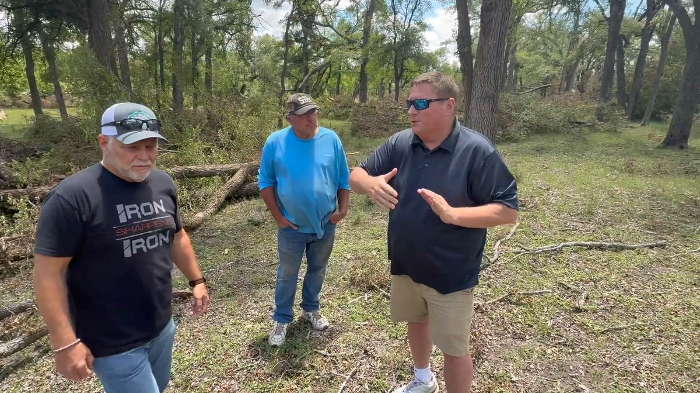

Connect Leaders
We bring churches, nonprofits, disaster response organizations, and community partners into trusted relational spaces where collaboration can grow before a crisis happens.
Explore Networks
Serve Source strengthens the relationships, communication, coordination, and shared tools that help churches, nonprofits, and community partners serve with greater clarity, unity, and impact — in everyday outreach and in times of crisis.
Not sure yet? Join a live Info Session → Find a disaster responseSee active disasters and who’s respondingGet started
Find a disaster responseSee active disasters and who’s respondingGet started
 Volunteer on a rebuildJoin long-term recovery projectsGet started
Volunteer on a rebuildJoin long-term recovery projectsGet started
 Find organizations near youChurches and nonprofits on the mapGet started
Find organizations near youChurches and nonprofits on the mapGet started

Register your organizationGet your church or nonprofit connectedGet startedThe passion to serve already exists. Serve Source helps build the relationships, tools, visibility, and coordination infrastructure that allow trusted leaders and organizations to serve together more effectively.
We bring churches, nonprofits, disaster response organizations, and community partners into trusted relational spaces where collaboration can grow before a crisis happens.
Explore Networks
We support shared situational awareness, response mapping, partner visibility, and long-term recovery coordination so communities receive clearer and more connected support.
View Disaster Response
We develop practical tools, resources, data systems, and communication pathways that help organizations strengthen capacity and serve with wisdom, unity, and care.
View Resources
From monitoring and active response to rebuild and long-term recovery, Serve Source helps trusted organizations share activity, identify gaps, reduce duplication, and make credible service visible.

Serve Source helps local leaders build ongoing community networks where churches, nonprofits, and partners can understand needs, share resources, and work together with clarity and trust.

Serve Source does not try to take the place of local churches, ministries, nonprofits, or disaster relief organizations. We help strengthen the connective tissue between them — the relationships, shared visibility, communication pathways, and practical tools that allow each organization to do what it does best.
Technology supports trust; it does not replace it.
Maps, profiles, updates, and data help leaders see who is serving where.
We help partners align efforts while honoring each organization’s unique calling.
We support readiness, response, recovery, and ongoing community care.
Serve Source continues to monitor events and surface response activity from trusted partners.
With 50+ partner organizations across the nation and around the world, we’re committed to bringing hope to communities—both in times of crisis and throughout the long road of recovery. Our goal is to share opportunities and make it easy for you to get involved. This is where we feature major REBUILD projects and Large-Scale Serve Opportunities that make a lasting impact.
View Rebuild Projects


Whether you’re a church leader, business leader, or simply someone eager to make a difference—Serve Source makes it easy to find meaningful ways to engage in organized relief efforts.
Our incredible partner organizations are active in communities across the country, creating ongoing opportunities to serve, rebuild, and bring hope to those who’ve faced the hardest times. These are powerful Short-Term Mission opportunities—and we invite you join them and support the efforts!
Explore Rebuild Projects
Register your organization, connect with a community network, or support the tools and relationships that help churches and nonprofits serve communities with greater clarity, trust, and impact.